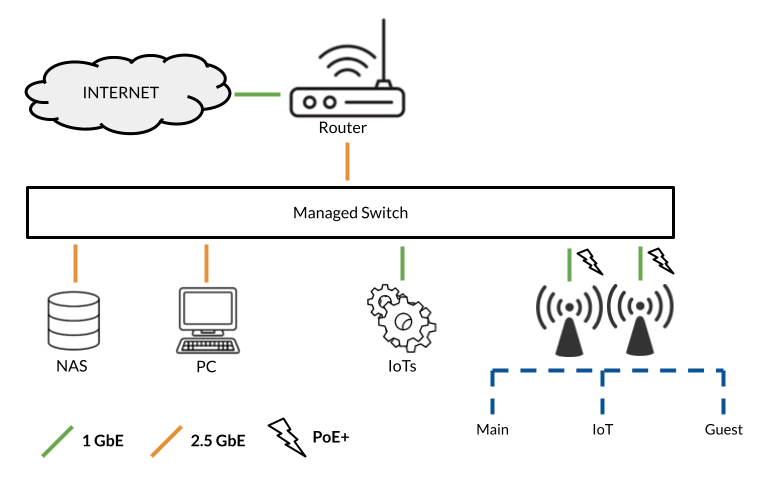

2024년도 지름 결산
여전히 매해 연말 지름보고 입니다.
- 2015년 지름결산
- 2016년 지름결산
- 2017년 지름결산
- 2018년 지름결산
- 2019년 지름결산
- 2020년 지름결산
- 2021년 지름결산
- 2022년 지름결산
-
Mosko Moto Rackless 40 + Scout 30L
390 어드벤쳐로 모토캠핑을 가기 위해 모스코모토 Rackless 40L 가방을 샀습니다. 사실 짐 생각하면 80리터 정도를 사야 하는데, 그건 390 어드벤쳐에 너무 거대해 보일 것 같더군요.
탑 가방으로는 기본으로 8L 가방이 포함되어 있습니다. 확실히 작더군요. 몇개 넣지도 않았는데 가득 차버립니다. 그래서 Stinger 22L를 구매하려고 했는데 (22L는 Rackless 40L과 호환됩니다.), 평소 출퇴근에도 쓰고 싶은 마음에 Scout 30L을 구매했습니다.
Rackless 40L에 Scout 30L을 연결하려면 기본 비버테일로도 간신히 가능하지만 따로 Cinch strap을 연결하는 게 낫습니다.
확실히 모스코모토 제품은 튼튼하다는게 팍팍 느낌이 오는데, 대신에 좀 불편합니다. 평소엔 같이 구매한 Cinch strap을 쓰지 않고, ROK strap을 써서 좀 더 편하게 탈부착 하고 있습니다.
-
Apple Mac Mini (M2)
둘째 컴퓨터가 고장나서 테스트할 겸 제 데스크탑과 그래픽 카드를 바꿔서 테스트 했습니다. 그런데, 아들 컴퓨터는 잘 동작하고, 제 데스크탑이 무한 재부팅을 하더군요. 그래픽카드 (6700XT)가 문제였습니다. 예전 RX 570X 도 조금만 부하가 걸리면 셧다운 되는 증상이 있었는데, RX 6700XT도 마찬가지네요. 더이상은 AMD 그래픽카드는 구매하지 않기로 다짐합니다.
그런데, 다시 제 그래픽카드를 꼽았는데도 제 데스크탑은 부팅이 되질 않네요. 이리저리 한참을 디버깅 한 결과, 메인보드가 고장났습니다. 아들 메인보드는 버텨냈는데 정작 제 비싼 메인보드 (x570)는 버티질 못했네요.
메인보드를 교체할 까 하다가, 곧 라이젠 9000 시리즈가 나올 것 같아서 한참을 구매를 미루고 데스크탑이 없이 살았네요. 그런데 영상도 편집해야 하고, 이런 저런 불편한 점이 있어서, 임시로 맥 미니를 구매했습니다.
가장 저렴한 M2 8GB 256DB 옵션인데, 놀랍네요. 영상 편집도 오히려 라이젠 5800X + 32GB + RTX 3080 보다 부드럽습니다. 윈도우에서는 영상 클립을 자르거나 하면 몇초간 랙이 있는데, 맥 미니에선 그런게 전혀 없네요.
나중에 PC를 업그레이드 할게 아니라 그 돈으로 맥 스튜디오 신형이 나오면 그걸 사는 게 낫겠다는 생각이 듭니다.
-
TCX Hero 2 Boots
회사 출퇴근으로 신고 다니는 신발은 10년전 본네빌 타고 다닐 때 신던 TCX Street 신발입니다. 바이크를 다시 타고 난 후에는 항상 어드벤쳐나 인듀로 바이크만 타다보니 이 TCX Street 신발을 신고 다닐 일이 없었죠. 그러다 교통체증 때문에 회사 출퇴근을 바이크로 하게 되면서 다시 신기 시작했는데, 오래되다보니 좀 바꿔야겠다는 생각이 들어서 바꾸었습니다.
처음엔 Rokker Urban Rebel 을 사려고 했는데, 나머진 다 마음에 드는데 복사뼈를 보호하질 못해서 비슷한 스타일의 TCX Hero 2를 구입했습니다.
일단 신발이 꽤 편합니다. 발가락과 발꿈치, 복사뼈 보호가 되어있는데도 방수도 되고 가죽에 익숙해지면 꽤 편해지네요. 밑창이 Rokker Urban Rebel같이 비브람은 아니지만 그래도 바이크에서 내려서 걸어다니기엔 부족함이 없습니다.
-
DJI Mic 2
DJI Osmo Pocket 3에 같이 딸려온 DJI Mic 2 송신기를 녹음용으로 잘 쓰고 있었습니다. 주머니에 항상 넣고 다니면서 영어 연습도 할 겸 녹음하고 있었는데, 잃어버렸네요. 클립을 주머니에 꼽고 다니고 있었는데 어느새 빠졌나봅니다.
그렇게 없는 채로 사는데, 아무래도 영어 연습도 해야 하고 오스모 포켓 쓸때 마이크도 필요하고, 곧 구입할 Osmo Action 5 에 마이크 두개 달아서 헬멧안에도 넣고 배기음도 녹음하고 싶어서 DJi Mic 2 세트를 장만했습니다.
기존에 쓰던 것이다 보니 크게 리뷰할 점은 없네요. 수신기도 같이 오지만, 수신기는 거의 쓰질 않습니다. 오스모 포켓3 제품이 이미 수신 기능이 내장이다 보니 필요가 없더군요.
수신기가 생기면서 알게 된 기능인데, 송신기가 수신기로 연결될 때는 녹색등, 블루투스 기능 (포켓, 액션)으로 연결 될 때는 청색등이더군요. 둘 사이를 모드 변경 하려면 녹음 버튼을 길게 눌러주면 변경이 가능합니다.
이젠 잃어버리지않게 목에라도 걸고 다니던지 해야겠습니다.
-
Unifi U7-Pro

제가 설정한 네트워크는 위에처럼 되어있습니다. WiFi를 위해서 두 개의 U6+ POE AP를 사용하고 있었는데, 그 중 하나가 종종 뻗더군요. 아예 동작을 안하는 것은 아닌데, 몇초간 랙이 생기고 하더군요.
이걸 RMA (A/S)를 맡기려니 그동안 사용할 AP가 필요했습니다. 하나로는 집 안 전체가 커버가 안되거든요. 그래서 그냥 U6+는 수리하고 나면 팔자, 하고 U7 Pro를 구입했습니다.
아직 집에 WiFi 7을 지원하는 기기도 없고, WiFi 6E를 지원하는 기기도 하나 밖에 없어서 새로 지원하는 6GHz 대역을 잘 활용하지는 못하고 있습니다.
-
Apple Mac Mini (M4)
바로 위에 M2 맥 미니를 구입했다고 썼는데, M4를 다시 구입했습니다. M4 맥미니가 나오는 순간 이걸 안 살 수가 없더군요. 맥스튜디오를 기다렸는데, M4 맥미니면 뭐 스튜디오가 필요가 없겠더라구요.
일단 사이즈가 무척이나 작아졌습니다. 그 전 m2는 책상 밑에 고정을 해 두었는데, 사이즈가 줄면서 그럴 필요가 없어졌습니다. 책상에 두고 사용하고 있는 데, 모니터 뒤에 고정을 해 두어도 문제 없겠다는 생각이 듭니다.
성능은 M2와 비교 불가입니다. 일단 제 기본형 M2가 메모리가 8GB였던 것도 있는 데, 16기가로 올라가면서 앱이 빠릿빠릿해졌네요. Small LLM 모델 메모리에 상주시켜두고 써도 메모리에 부담이 없습니다. 그럼에도 동일한 가격!